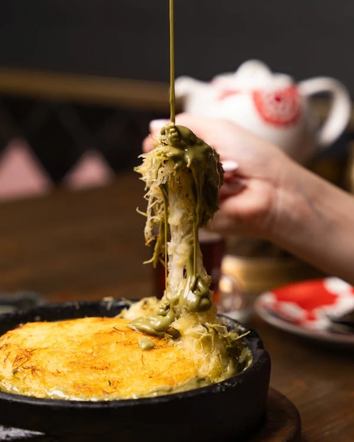
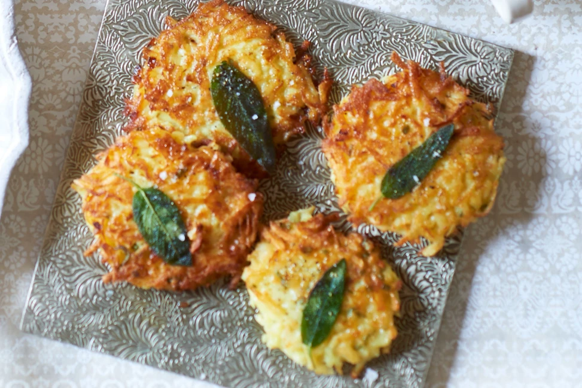
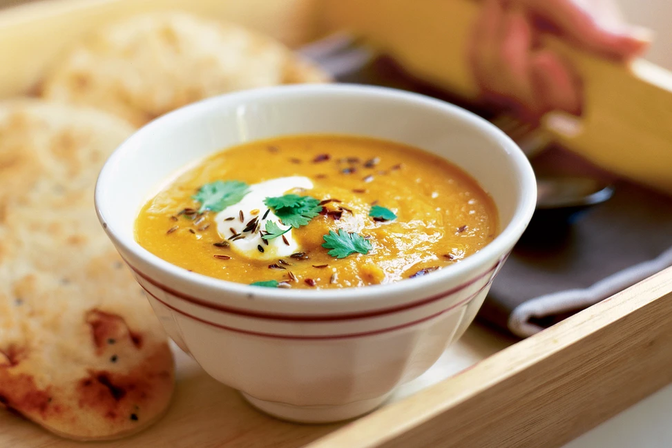
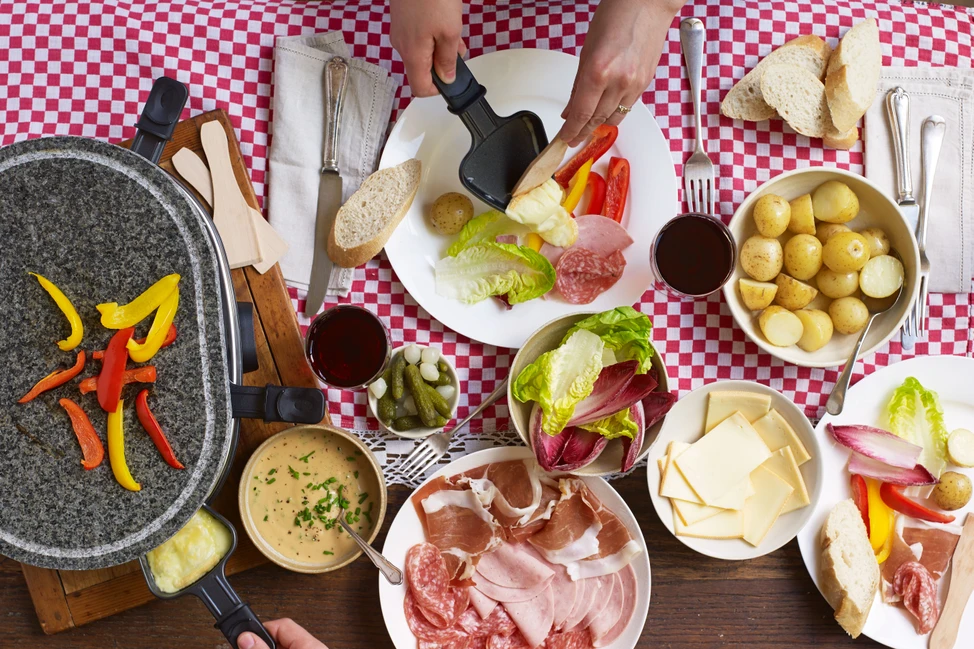

Fondue in Switzerland may seem clichéd, but it is indelibly woven into the country's fabric. For centuries, Swiss living in the mountains relied on fondue as a way to use bread and cheese during colder months. Today, it is a must-have for any local or visitor to the country from autumn to spring.Papet Vaudois is best described as a mash of leeks and potatoes that are stewed for hours. The result is an earthy, onion-tinged mixture that makes the perfect root bed for fat sausage, unique to the canton of Vaud (saucisson Vaudois). With deep roots in the canton, Papet Vaudois is akin to the region’s emblematic dish, and its notorious crimson sausage, loosely stuffed and plump, is not to be missed.

Thinly grated potatoes, pan-fried until crisp and golden, rosti is one of Switzerland's iconic national dishes. Though no one knows when the first rosti was cooked-up, farmers in the canton of Bern would traditionally eat it for breakfast. It is now found throughout the country and across mealtimes.

It was once said that a girl from Basel could not marry until she knew how to make roasted flour soup. Though there are countless ways to make the dish, at its most basic, it is simply flour, butter, onion and beef stock, topped with a reserved grating of Gruyere. Legend has it the soup was created when a distracted cook was chatting away, leaving flour cooking in a pot until accidentally browned. Rather than ditch the mishap, it was turned into a dish that has endured. The soup is a must-have at Basel Carnival, which is officially launched with a serving of it at 3am.

Hailing from the canton of Valais, raclette is a local cheese customarily grilled slowly over a fire, with layer-by-melted-layer sliced off to blanket boiled potatoes, pickles and onions. Contemporary raclette machines make grilling commonplace in Swiss homes, where friends gather for hours, waiting for slices of raclette to melt, while drinking copious glasses of local Fendant wine.